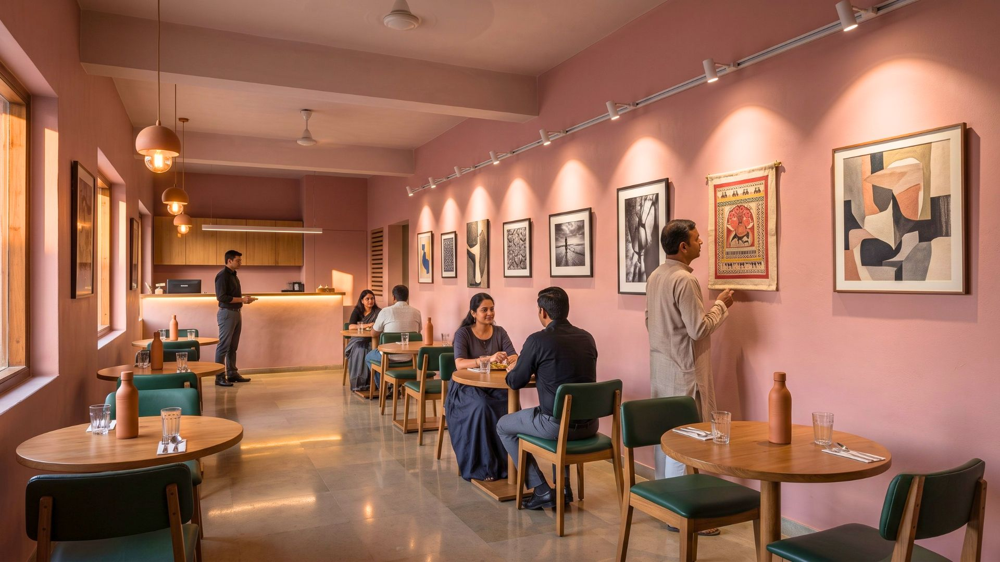
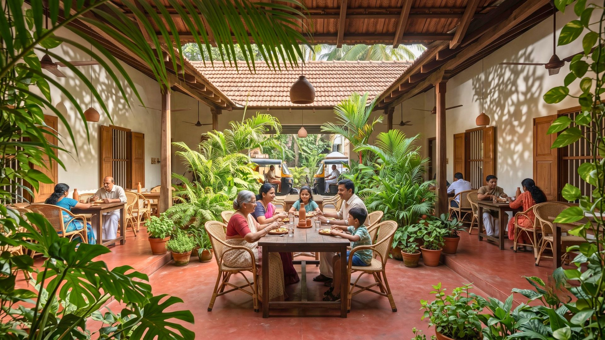
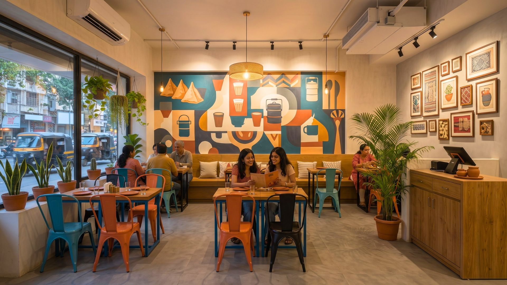
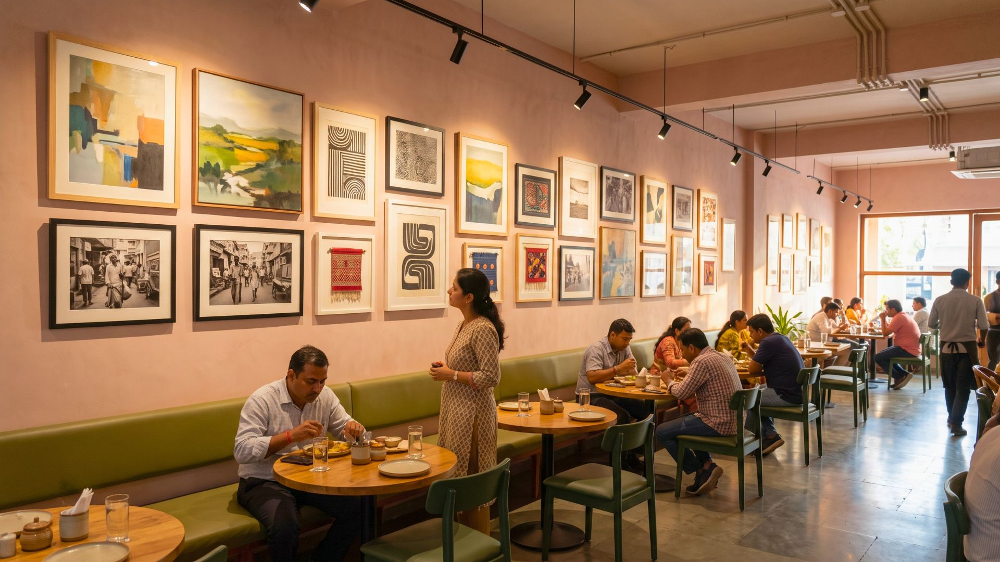
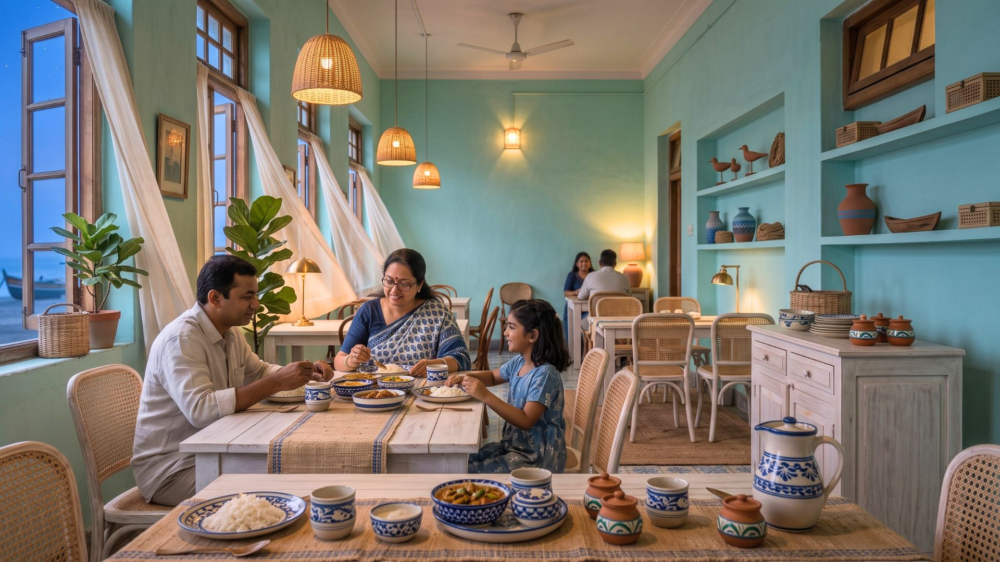
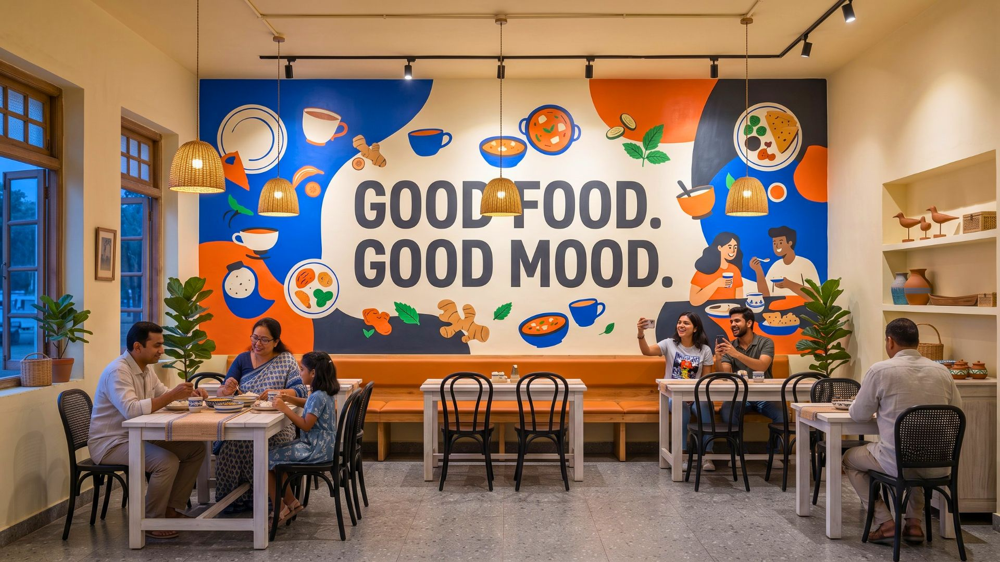

Creating an inviting restaurant space doesn't have to drain your wallet. With creativity and smart decision-making, you can craft a space that captures your brand's story while leaving a lasting impression on your customers. Whether you're opening your first restaurant or giving your space a much-needed facelift, these 7 budget-friendly restaurant design ideas will help you achieve big results with a small budget.
1. Embrace the Beauty of Minimalism

Minimalism is all about simplicity, elegance, and purpose, making it one of the most cost-effective ways to design your restaurant.
- Declutter: Strip your space down to its essentials. Highlight key elements like your menu board, a centrepiece art piece, or signature furniture.
- Neutral Palettes: Use soft tones like whites, beiges, and light greys to create a clean, calming atmosphere.
- Natural Materials: Incorporate organic materials like wood, bamboo, terracotta, and clay to exude warmth.
- Add Flair: To avoid looking too stark, use statement lighting, textured fabrics, or a touch of metallic decor to bring life to the space.
Minimalism doesn't mean boring – it's about making fewer things look extraordinary.
2. Go Green with Indoor Plants

Want to make your restaurant feel alive? Add plants – lots of them. Not only are they affordable, but they also create a fresh, vibrant atmosphere your diners will love.
- Types of Plants: Use small succulents on tables, larger potted plants in corners, or hanging vines for a lush look.
- Create a Green Wall: Transform a blank wall into an Instagram-worthy vertical garden.
- Functional Tip: Grow herbs like basil or mint for a farm-to-table vibe diners love.
- Mood Booster: Studies show greenery reduces stress and promotes happiness, leaving guests relaxed and refreshed.
Plants are nature's decor – inexpensive, versatile, and always in style.
3. Master the Art of Lighting

Lighting isn't just practical; it's the secret ingredient that sets the mood and elevates the entire dining experience.
- Ambient lights for general illumination.
- Task lights for focused areas like counters and prep stations.
- Accent lights for highlighting design elements and artwork.
- Budget-Friendly Ideas: Fairy lights, Edison bulbs, or vintage lanterns add character. Adjust intensity to set the mood – dim and warm for intimacy, bright for energy.
Great lighting doesn't just light up your space – it lights up the mood.
4. Turn Your Walls Into Art Galleries

Featuring local art is not just budget-friendly; it's also a way to support your community while keeping your walls dynamic and fresh.
- Partner with local artists for rotating exhibits, changing pieces monthly or quarterly.
- Benefits: Guests keep coming back to see what's new, and you might even earn commissions on sold art pieces.
- Bonus Tip: Use accent lighting to spotlight artwork, turning every piece into a conversation starter.
Every wall can tell a story – make yours unforgettable.
5. Repurpose and Refurbish Furniture

You don't need expensive furniture to create a stylish space. Instead, think resourceful and creative.
- DIY Magic: Sand down old chairs and tables, paint them vibrant colors, or upholster them with unique fabrics.
- Thrift Finds: Check out estate sales, flea markets, and consignment shops for hidden gems.
- Personalize It: Add colorful cushions, plush throws, or eye-catching rugs to breathe new life into simple furniture.
- Eco-Friendly Tip: Use recycled or upcycled materials for furniture to align with sustainability trends.
When it comes to furniture, charm beats cost every time.
6. Make Bold Statements on Your Walls
A big, bold wall design can instantly transform your space into an Instagram hotspot.
- Oversized typography that reflects your brand personality.
- Playful illustrations or chalkboard designs that can change with the seasons.
- Wallpapers or decals for a quick, affordable update.
- Color Combos: Black text on white walls or white text on black walls is timeless, but don't shy away from experimenting with bold colors and patterns.
Your walls are a canvas – let them speak volumes about your brand.
7. Curate Eye-Catching Decor and Accessories

It's the little details that create the big picture. Accessories can tie your entire design together while making your space #instaworthy.
- Turkish lamps, handwoven rugs, and macramé for texture and warmth.
- Unique ceramics, wooden shelves, and jute baskets for an earthy, curated look.
- Low-Budget Hacks: DIY some of your decor, like painted vases or recycled art, for a personal, creative touch.
Guests will remember how they felt in your space – let your decor leave them mesmerized.
Final Thoughts
Designing a stunning restaurant on a budget isn't just possible – it's an opportunity to showcase your creativity and innovation. From minimalist layouts and lush greenery to statement walls and local art, there are countless restaurant design ideas that can make your space stand out without overspending.
The key is to balance functionality with personality and always keep your guests' experience at the heart of your design choices.
Looking for budget-friendly restaurant design solutions? At SprintCo, we bring your ideas to life with creative designs and branding that fit your budget. Let's make your dream space a reality — contact us today!